4 jours à Berlin, comment s’occuper ?
Pour commencer, si tu n’as pas encore de date de départ, je te conseille de partir à la fin du printemps ou
en début d’été afin d’éviter au maximum la pluie et le brouillard. En effet, la visite de la ville sous ces conditions
n’est vraiment pas favorable, l’Allemagne ayant un hiver très long.
Lors de mon séjour à Berlin, j’ai pu me promener dans l’île au musée, voir la Porte de Brandebourg, le Mémorial aux Juifs
assassinés d’Europe, et le Palais du Reichstag. J’ai visité le Musée des jeux-vidéo sur ordinateur et le Porsche Digital
Lab. Et une visite à Berlin ne serait pas une visite réussie sans passer par le mur de Berlin et parcourir la ville à la
recherche de street art.
Si tu es un ou une passionné(e) d’art, je te conseille d’aller au marché d’art de Berlin, il longe le
Spree et on peut apercevoir le Berliner Dom. On y trouve de sublimes illustrations, des cartes postales, des tableaux,
des bijoux taillés dans des pièces de monnaie. Sortie incontournable pour toi, le mur de Berlin avec ses fresques
connues dans le monde entier. Si tu as la possibilité de faire une visite guidée de Berlin avec comme thématique le
street art, je ne peux que te le recommander. Même avec un temps peu clément, cette visite a été pour moi un véritable
plaisir.
J’en suis repartie avec des images sublimes gravées dans ma mémoire et de nouvelles connaissances.
 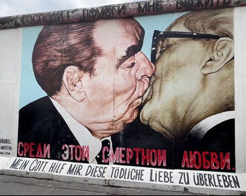
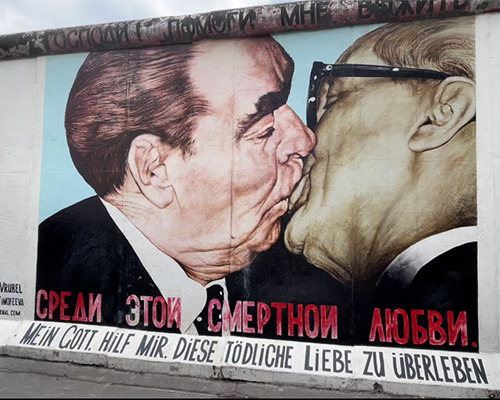
Si tu es plus du genre geek, le Computerspielemuseum est fait pour toi. On y retrace l’évolution des
jeux-vidéos sur ordinateur. Des arcades vintages à l’emblématique Wii, on y retrouve toutes les consoles imaginées et
commercialisées.
Pour les plus courageux et courageuses, on peut essayer le jeu PainStation en ayant plus de 18 ans et en signant la
décharge qui se trouve juste à côté. Le concept, un pong complexifié. Chaque joueur se place d’un côté de la table et pose
sa main sur une plaque à sa gauche, si le joueur retire sa main c’est un game over. À l’aide de sa main droite sur le
joystick, le joueur va tenter de gagner ou plus précisément éviter de perdre. Si le joueur rate la balle, sa main gauche en
subit les conséquences : sois par une décharge électrique, une brûlure via une plaque à induction sous sa main ou il se
retrouve fouetté par un câble lancé à grande vitesse sur le dos de sa main.
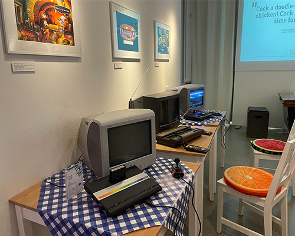
 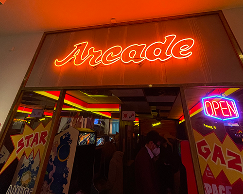
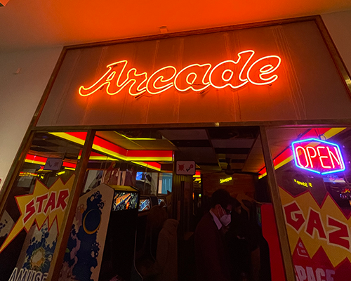

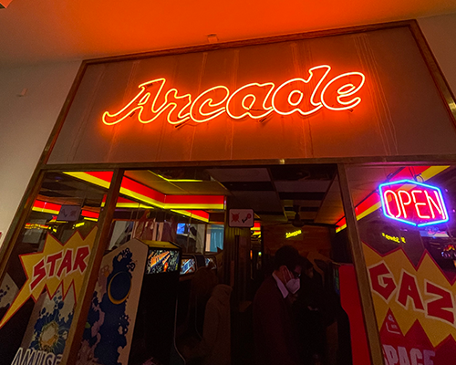
Pour combler mon côté un peu geek, j’ai eu l’opportunité de visiter le Porsche Digital Lab. Je ne crois pas
que les visites soit ouvertes au public, mais je tenais à vous en parler un peu. J’ai pu discuter avec des employés de chez
Porsche et se fut très enrichissant. La manière de travailler chez Porsche est moderne, plus besoin du fameux costard
cravate, leur système écologique mis en place est prometteur. Ils encouragent leurs employés à co-voiturer en donnant une
prime à ceux qui le font. L’ambiance de travail paraît chaleureuse et les locaux sont sympathiques. Après ceci ne reste
qu’un avis d’une personne extérieure à l’entreprise.
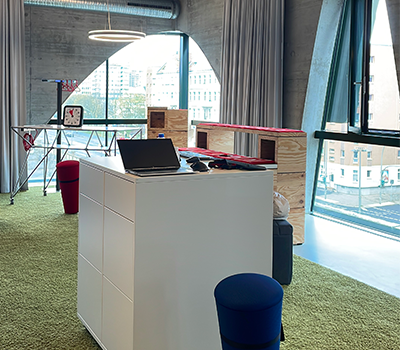
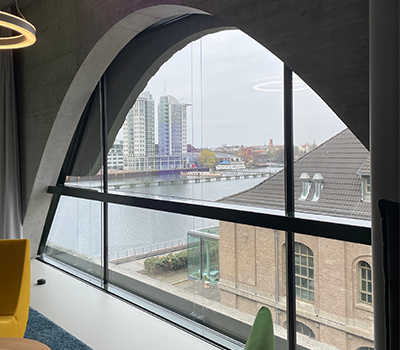
Si tu aimes te promener, je te conseille d’aller à la Porte de Brandebourg. Monument incontournable, tu ne
peux pas passer à Berlin sans jeter un coup d’oeil. Accessible en transport en commun, tu n’as aucune excuse pour ne
pas y aller. À deux pas de là, tu trouveras le Mémorial aux Juifs assassinés d’Europe et le Palais du Reichstag. Même
sous la pluie, les monuments sont sublimes, je n’imagine même pas si je les avais vu avec un grand ciel bleu.
 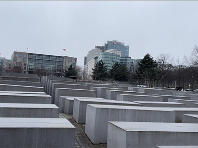
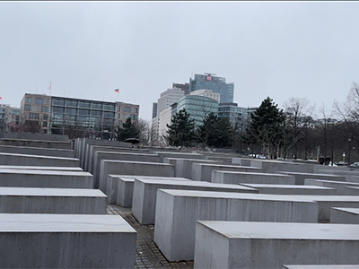
Pour conclure, le dernier soir avant de partir, j’ai pu aller faire un bowling. L’expérience était très
sympathique même si cela reste une activité que l’on peut faire en France. Si un soir, tu ne sais pas quoi faire tente
l’activité et montre le talent français au bowling à ces Berlinois.
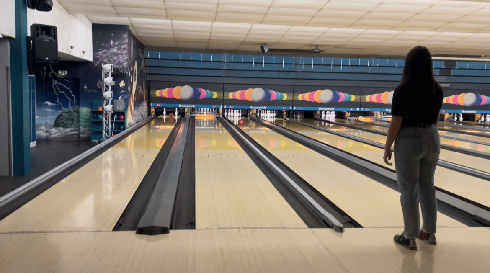